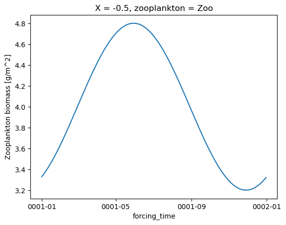
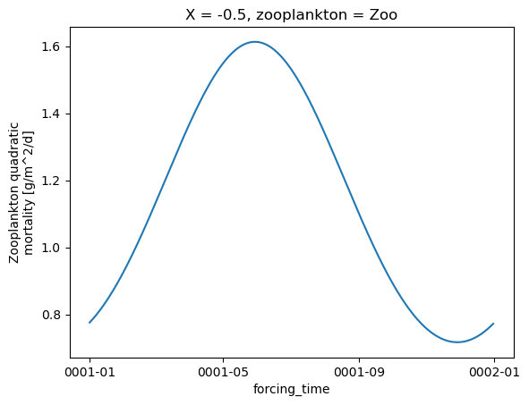

FEISTY test cases#
The testcase module provides some utilites to generate domain and forcing data
for a handful of feisty test cases.
Here we illustrate some of these utilties.
%load_ext autoreload
%autoreload 2
import matplotlib.pyplot as plt
import numpy as np
import xarray as xr
import feisty
Idealized bathymetry#
domain_dict = feisty.testcase.domain_tanh_shelf(nx=22)
domain_dict
{'bathymetry': <xarray.DataArray 'bathymetry' (X: 22)> Size: 176B
array([ 30.04108171, 30.19902725, 31.17873201, 36.8321355 ,
61.34734988, 131.85502453, 264.42098685, 437.55383604,
609.22301965, 749.85055796, 851.52743149, 919.48569869,
962.76570279, 989.53462509, 1005.8032774 , 1015.58739719,
1021.43508524, 1024.91716307, 1026.98605941, 1028.21370613,
1028.94160815, 1029.37300191])
Coordinates:
* X (X) float64 176B -0.5 -0.2381 0.02381 0.2857 ... 4.476 4.738 5.0
Attributes:
long_name: depth
units: m,
'NX': 22}
domain_dict["bathymetry"].plot(marker="o")
plt.gca().invert_yaxis()
plt.title("Bathymetry")
Text(0.5, 1.0, 'Bathymetry')
Idealized forcing data#
The testcase subpackage of feisty includes a utilty to generate idealized
forcing representing an annual cycle using harmonic function.
Here is an example dataset returned:
forcing = feisty.testcase.forcing_cyclic(domain_dict)
forcing.info()
xarray.Dataset {
dimensions:
forcing_time = 365 ;
X = 22 ;
zooplankton = 1 ;
variables:
object forcing_time(forcing_time) ;
float64 X(X) ;
float64 T_pelagic(forcing_time, X) ;
T_pelagic:long_name = T_pelagic ;
T_pelagic:units = degC ;
float64 T_bottom(forcing_time, X) ;
T_bottom:long_name = T_bottom ;
T_bottom:units = degC ;
float64 poc_flux_bottom(forcing_time, X) ;
poc_flux_bottom:long_name = POC flux ;
poc_flux_bottom:units = g/m^2/d ;
poc_flux_bottom:b = 0.7 ;
<U3 zooplankton(zooplankton) ;
float64 zooC(zooplankton, forcing_time, X) ;
zooC:long_name = Zooplankton biomass ;
zooC:units = g/m^2 ;
zooC:harmonic_parms = Zoo = {'mu': 4.0, 'amp_fraction': 0.2, 'phase': 10.0} ;
float64 zoo_mort(zooplankton, forcing_time, X) ;
zoo_mort:long_name = Zooplankton quadratic mortality ;
zoo_mort:units = g/m^2/d ;
// global attributes:
:note = Idealized cyclic forcing for FEISTY model. ;
}
Visualizing forcing data#
The temperature field looks like this:
fig, axs = plt.subplots(nrows=2)
forcing.T_pelagic.plot(ax=axs[0])
forcing.T_bottom.plot(ax=axs[1])
<matplotlib.collections.QuadMesh at 0x7f6c40b4dd90>

Or at a single X point:
forcing.T_pelagic.isel(X=0).plot(label="T_pelagic")
forcing.T_bottom.isel(X=0).plot(label="T_bottom")
plt.legend()
<matplotlib.legend.Legend at 0x7f6c40ba5890>
Zooplankton and POC flux
zoo = forcing.zooC
for i in range(zoo.zooplankton.shape[0]):
plt.figure()
zoo.isel(X=0, zooplankton=i).plot()

Zooplankton mortality
zoo = forcing.zoo_mort
for i in range(zoo.zooplankton.shape[0]):
plt.figure()
zoo.isel(X=0, zooplankton=i).plot()

POC flux
forcing.poc_flux_bottom.isel(X=0).plot()
[<matplotlib.lines.Line2D at 0x7f6c40946f10>]